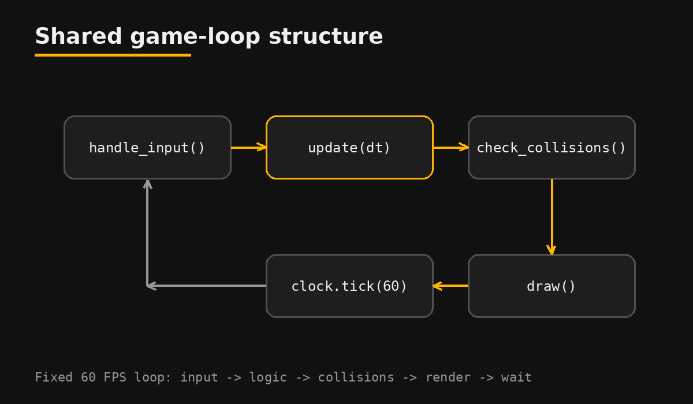

One loop, three games
Shared architectureEvery game follows the same cycle: read input, update the world, resolve collisions, draw, and wait for the next frame. Writing that loop once let me focus each game on what makes it unique.

Decision: pass a time step (
dt) to update() so speed does not depend on the computer's performance.